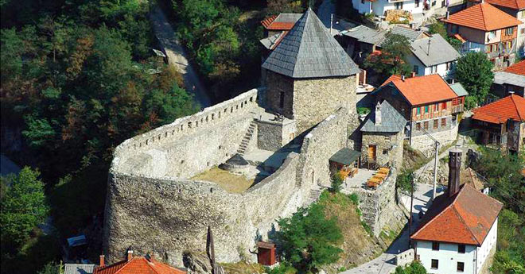

Vranduk

Vranduk Fortress is a fortification in the municipality of Zenica, Bosnia and Herzegovina. It's name
Vranduk is derived from the word branduk (defend).
It is located about 10 km downstream from the center of Zenica, on the left side of the valley of the
river Bosna, which here looks like a gorge.
Vranduk Fortress was built at the end of the 14th century in the parish of Brod, one of the 7 parishes of
medieval Bosnia. It was a ban city and then a royal city. The name Vranduk was first mentioned in 1410. In
the vicinity of Vranduk, a system of defensive structures developed and within these walls the smaller settlement
of Sotto Vranduch. In it, Bosnian kings received delegations, signed treaties and issued charters. King Tomaš's
brother, Radivoj, is mentioned in the documents as "the prince of Vranduk". A larger trade and craft settlement
outside the ramparts was created in the village of Varošišće, about 2.5 km away from the fortification in Vranduk.
The Ottomans captured Vranduk in 1463. In his campaign against Bosnia in 1697, Eugene of Savoy, noticing the
difficulty of conquering the city, bypassed Vranduk. At the beginning of the 18th century, the Vrandučka captaincy
was founded. In the 18th and early 19th centuries, the city served as a prison for political culprits. Austrian
troops captured the city in 1878 and kept the crew there until 1890, when it was abandoned. Vranduk Fortress
belongs to the type of hill fortification and consists of a citadel with a main tower and the remains of walls.
The fortress, despite later alterations, has preserved its original forms, reminiscent of the early solutions of
European fortifications. In the Middle Ages, the main tower was taller and the barn area was divided by a wall.
The small tower and the east wall were subsequently extended to protect the entrance to the fortress. Within the
enclosure, there were several buildings for various purposes, and the remains of "Dizdar's house" were also found.
Numerous archeological finds from the Middle Ages and the Ottoman period were found inside the walls: vessels,
jewelry, coins, tools, spurs, etc. All finds are stored in the Museum of the City of Zenica.